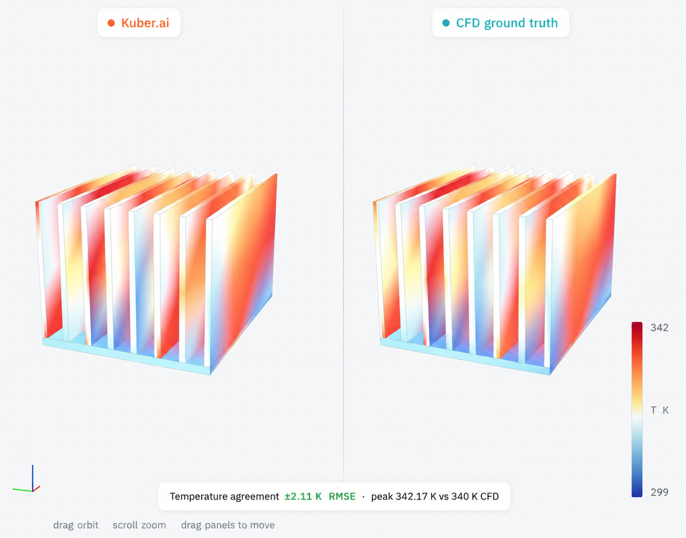
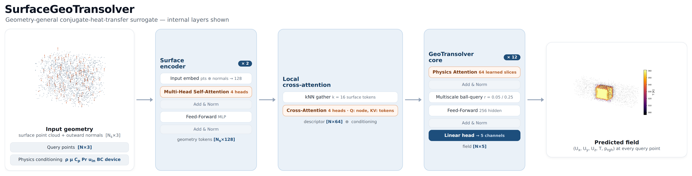
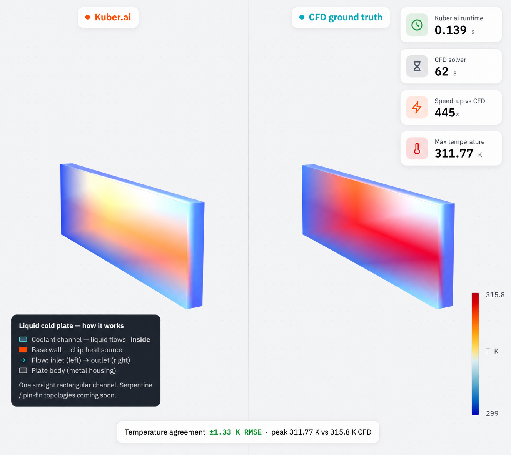

Abstract—Conjugate heat transfer (CHT) — the coupled transport of heat through a solid conductor and a surrounding moving fluid — governs the thermal design of heatsinks, cold plates, heat exchangers, power electronics, and battery packs. High-fidelity computational fluid dynamics (CFD) resolves these fields but costs minutes to hours per geometry, prohibitive inside a design loop. We present Kuber, an open framework for building neural surrogates of CHT, and KuberNet, a geometry-general model that predicts the full steady field (U, T, p) at an arbitrary query point cloud in a sub-second. The model couples a physics-attention transformer core with a surface-geometry encoder, so it ingests raw boundary geometry (a surface point cloud with normals) and requires no analytic signed-distance field, and it is conditioned on the full set of physical scalars plus a device-class flag. Its surface cross-attention is anisotropic: a learned wall-normal penalty (ABL attention) biases each query to attend along the boundary rather than across it, mirroring the structure of a thermal boundary layer. On the public SIMSHIFT heatsink benchmark it attains 11.84 K temperature RMSE on the medium out-of-distribution split, improving on the best previously published result (12.41 K) while using no unsupervised domain adaptation, which every reported baseline relies on. A single set of weights spans two physically distinct device classes — buoyancy-driven heatsinks in air and forced-convection liquid cold plates — and pretraining on a self-generated OpenFOAM corpus lowers out-of-distribution error further. We additionally verify numerical soundness: the predicted temperature gradient never exceeds the physical gradient at fin tips and corners (explosion fraction zero, no NaN/Inf). All results are reproducible with the released code and data.
Index Terms—conjugate heat transfer, neural operators, surrogate modeling, transformers, physics-informed machine learning, out-of-distribution generalization.
Thermal design is an inner loop. An engineer proposes a geometry — a fin array, a cold-plate channel layout — and must know the resulting temperature and flow field before iterating. The field is produced by solving the coupled Navier–Stokes and energy equations across a solid and a fluid region: conjugate heat transfer (CHT). Finite-volume CFD solves this accurately but slowly; in our measurements a single steady case takes a median of 22 minutes and up to nearly two hours for fine geometries. Sweeping thousands of designs, or closing an optimization loop, is therefore dominated by solver cost.
Neural surrogates promise to amortize this cost: learn the geometry-to-field map once, then evaluate it in milliseconds. Recent operator-learning and transformer methods have made this practical for external aerodynamics, but electronics-cooling CHT has received far less attention, has no widely used open benchmark harness, and no shared, license-clean data-generation recipe. Two requirements make the problem hard. First, geometry generality: a useful surrogate must accept arbitrary CAD, which rules out geometry encodings that presuppose an analytic shape. Second, generalization: the surrogate must predict geometries it never saw in training.
We make three contributions. (i) KuberNet, a surface-conditioned physics transformer whose defining component is an anisotropic boundary-layer (ABL) cross-attention that penalizes wall-normal coupling; it predicts the full five-channel CHT field at any query point from raw boundary geometry and physical conditioning, reaching state of the art on a public benchmark without domain adaptation. (ii) A reproducible data engine generating a self-labeled OpenFOAM CHT corpus across fluids, regimes, shapes, and two device classes, with a convergence gate and a verified mesh-convergence protocol. (iii) An honest evaluation harness — per-field normalized error, near-wall fidelity, a numerical no-explosion proof, and a value-of-data ablation — with released code, data, machine-readable results, and an interactive viewer.

Neural operators. DeepONet [7] and the Fourier Neural Operator [6] established learning maps between function spaces; GINO [8] extended operator learning to large 3D geometries. These are strong on fixed domains but do not natively consume arbitrary boundary geometry with per-node queries. Transformer PDE (partial-differential-equation) solvers. Transolver [3] introduced physics attention over learned slices; UPT [4] and the anchored/branched variant (AB-UPT) [5] scale transformer surrogates to industrial CFD. Our core builds on the GeoTransolver implementation in NVIDIA PhysicsNeMo [10]; our contribution is the surface-conditioning branch and the CHT-specific conditioning and training recipe. Geometry representations. Signed-distance fields (SDFs) are data-efficient when an analytic shape exists, but none exists for arbitrary CAD (computer-aided-design geometry); following the surface branch of AB-UPT [5] we encode the boundary directly as a point cloud with normals. Spectral fidelity. One-shot regression is spectrally biased; PDE-Refiner [9] restores high-frequency content, which we adopt as an optional head. Benchmarks. SIMSHIFT [2] is a public benchmark for distribution shift in engineering simulation; we use its heatsink task as our primary evaluation.
A CHT case consists of a solid conductor with boundary Γ immersed in a fluid domain Ω. Given the boundary geometry and operating conditions, we seek the steady field at any query point x ∈ Ω:
fθ : ( x, Γ, c ) ↦ (Ux, Uy, Uz, T, prgh),(1)
where U is velocity, T temperature, and prgh = p − ρgh the reduced pressure. The conditioning vector c collects fluid properties (Prandtl number, density, specific heat, dynamic viscosity), boundary conditions (BCs; a wall temperature for heatsinks or a heat flux for cold plates, and the ambient/inlet temperature), inlet velocity, and a binary device-class flag. The boundary Γ is presented as surface points with outward unit normals. Nothing in the input assumes a parametric shape family.
A surface encoder maps the boundary point cloud with normals to permutation-invariant geometry tokens via a shallow self-attention stack. A local cross-attention module produces, for every query node, a geometry descriptor by attending over its k = 16 nearest surface tokens, so each query carries a local view of the nearby boundary. This descriptor is concatenated with the broadcast conditioning vector to form the per-node embedding. The core is a GeoTransolver physics-attention transformer (256 hidden units, 12 layers, 8 heads, 64 physics slices, with multiscale local ball-query features) that regresses the five z-normalized (standardized: zero mean, unit variance) targets. The model has approximately 14.3 M parameters. A PDE-Refiner head refines the one-shot regression (detailed in Sec. IV-B). Geometry may alternatively be supplied as a (directional) signed-distance field for parametric families, but the surface-encoder configuration is the one we report because it is the only one applicable to arbitrary CAD.
Formally, write the surface as points pi ∈ ℝ3 with unit normals ni (i = 1…Ns), the query cloud as xj (j = 1…N), and the conditioning as c ∈ ℝC. The surface encoder embeds each element with a multi-layer perceptron (MLP) and applies an Ls-layer pre-norm Transformer of multi-head self-attention (MHSA), feed-forward networks (FFN), and layer normalization (LN):
hi0 = MLP([pi; ni]), H ← H + MHSA(LN H), H ← H + FFN(LN H), MHSA(Q,K,V) = softmax(QK⊤/√d)V,(2)
yielding geometry tokens zi = Hi(Ls). For each query xj, let Nk(j) be its k nearest surface points (k-nearest neighbors, kNN); with relative positions rji = xj−pi, learned bias bji = MLPr(rji), and query qj = MLPq(xj), the local geometry descriptor is
αji = softmaxi ∈ Nk(j) (qj⊤(WKzi + bji) / √dh − γ |rji·ni|), gj = WO ∑i αji(WVzi + bji)(3)
(multi-head; heads omitted). The penalty −γ |rji·ni| is Anisotropic Boundary-Layer (ABL) attention: it down-weights the wall-normal component of the query-to-node displacement (learned γ = softplus(·) ≥ 0, with γ = 0 recovering isotropic kNN), so a query inside a thin thermal boundary layer attends along the wall rather than across it — the anisotropy that plain Euclidean distance ignores, and (Sec. VI-F) our largest single accuracy gain. Locality and relative positions make gj compositional — a 10-fin heatsink is locally “more of the same” fin-gap patches seen at 5–8 fins. The per-node embedding ej = [gj; c] is lifted, uj0 = MLP([ej; xj]), and passed through Lc physics-attention blocks. Each block softly assigns the N nodes to M learned slices, aggregates them into slice tokens, attends among the M tokens, and scatters back:
wjm = softmaxm(uj⊤θm), tm = (∑jwjmuj) / (∑jwjm), uj ← uj + ∑mwjm MHSA(T)m(4)
followed by a multiscale ball-query aggregation of neighbors at radii {0.05, 0.25} and an FFN, each with a residual and LN. The slice mechanism costs O(NM) with M ≪ N instead of the O(N2) of dense attention. A linear head gives the z-normalized field, trained by mean-squared error and de-normalized to physical units:
ŷj = Wouj(Lc) ∈ ℝ5, ℒ(θ) = (1/BN) ∑b,j ‖ŷbj−ybj‖2, field = ŷj⊙σy + μy.(5)
Here Ns and N are the numbers of surface and query points and C the number of conditioning scalars; Ls, Lc the encoder and core depths and M the slice count; d, dh the model and per-head attention widths and ds, dg the token and descriptor widths; Q, K, V the attention query/key/value matrices; WK, WV, WO, Wo learned projection matrices and θm the M learned slice queries; σy, μy the per-channel target standard deviation and mean, ⊙ the elementwise product, B the batch size, and θ all trainable parameters. Every MLP is two-layer with a GELU activation.

Why we use it. One-shot regression under a mean-squared-error loss is spectrally biased: low-amplitude high-frequency modes — sharp fin-tip gradients, thin thermal boundary layers — contribute little to the squared error, so a single forward pass tends to over-smooth them. PDE-Refiner [9] removes this bias by casting field prediction as an iterative denoising process, whose training objective forces the network to represent structure at every spatial frequency; as a by-product, sampling the noise yields an ensemble and hence an uncertainty estimate.
How we use it. The same network fθ serves as both the signal predictor and the denoiser, conditioned on a refinement step k ∈ {0,…,K} through a sinusoidal step embedding and an extra noised-field input channel. With a geometric noise schedule σk = σmin k/K (σ0 = 0), each training sample draws k ~ Uniform{0,…,K}: at k = 0 the network regresses the field y from the conditioning; at k ≥ 1 it is given the target corrupted by noise, y + σk ε (ε ~ 𝒩(0, I)), and regresses the noise ε. At inference we take the initial one-shot prediction and apply K refinement steps,
u ← fθ(·, 0); k = 1…K: u ← (u + σk ε) − σk fθ(u + σk ε, k),(6)
so each step subtracts the network's predicted noise and restores fine structure; drawing several noise seeds ε gives an ensemble whose spread is a calibrated uncertainty. The refiner is the framework's spectral-fidelity head: it recovers the sharp near-wall temperature gradients that a one-shot mean-squared-error fit over-smooths. The out-of-distribution accuracy in Sec. V is reported from the one-shot model (k = 0); the refiner is the mechanism we apply when near-wall gradient fidelity or calibrated uncertainty is the priority, and it seeds the Uncertainty pillar of the suite.
We generate CHT data with OpenFOAM's steady buoyant solver (buoyantSimpleFoam) over a single fluid region, treating the solid as a heated wall (heatsinks) or heat-flux surface (cold plates). A parametric generator samples geometry and conditions; the geometry is meshed with blockMesh and snappyHexMesh plus prism layers, solved, and exported to 16,384 fluid nodes with the five field channels, the boundary surface cloud with normals, and a JSON of conditions. The pipeline is resumable and gated: a case is written only after a converged solve, and a physics filter rejects unphysical results. Sampling is seeded, so the corpus regenerates deterministically. It is entirely self-generated (Table I).
| Axis | Coverage |
|---|---|
| Fluids | air, water, oil (Pr≈292), glycol |
| Regimes | natural + forced convection |
| Shapes | fins, plate, cube, pin-fin; duct channels |
| Devices | heatsink (wall-T), cold plate (heat-flux) |
| Fidelity | ≈1.4 M cells/case → 16,384 nodes |
Benchmark. Our primary, externally comparable evaluation is the SIMSHIFT [2] heatsink task at medium difficulty: train on fin counts 5–8, test on the shifted, out-of-distribution (OOD) target of fin counts 10–12, which never appear in training. We train from scratch on the 222 training cases; normalizers are fit on the source training split only. Metrics. We report per-field root-mean-square error (RMSE) in physical units and normalized RMSE (nRMSE); the benchmark's primary selector is mean nRMSE across the five fields. We additionally report near-wall T-RMSE and edge gradient ratios (Sec. VI-D). No baseline uses unsupervised domain adaptation (UDA) — training-time adaptation to the unlabeled target (test) distribution, e.g. aligning source- and target-domain feature statistics to shrink the out-of-distribution gap — in our runs; the published baselines do, which is their best case. Training. Adam [11] at learning rate 10−3, batch size 4 cases (16,384 query nodes each), with a warmup–stable–decay schedule: a 5-epoch linear warmup, a stable phase held until the validation mean-nRMSE plateaus (patience 25 epochs), then a 30-epoch cosine decay to 10−6; the best-validation checkpoint is kept. Targets are z-scored per channel and coordinates mapped to a per-case unit frame. The encoder uses ds=128 (2 layers, 4 heads); the descriptor dg=64 with k=16; the core is 256-wide, 12 layers, 8 heads, M=64 slices, ball-query radii {0.05, 0.25} with {8, 32} neighbors (≈14.3 M parameters). Baseline numbers are quoted from the SIMSHIFT paper.
On temperature — the design-critical field — KuberNet improves on the best previously published result while using no UDA (Table II). The paper reports only temperature and velocity RMSE on the target domain; baseline parameter counts are not published but their released configurations are comparably sized (~10–15 M), so the improvement is not from scale.
| Model | UDA | Temp RMSE (K) ↓ | mean nRMSE ↓ |
|---|---|---|---|
| KuberNet (ours) | ✗ | 11.84 | 0.608 |
| UPT (prev. best) [4] | ✓ | 12.41 | — |
| Transolver [3] | ✓ | 13.43 | — |
| PointNet [1] | ✓ | 17.43 | — |
KuberNet attains 11.84 K temperature RMSE and 0.608 mean nRMSE (our primary selector) on the medium out-of-distribution split, beating the previous published best (UPT, 12.41 K) with no domain adaptation. The gain is driven by its anisotropic boundary-layer attention (Sec. IV-A): ablating it to isotropic kNN raises error to 12.14 K / 0.671 — a 9% larger mean nRMSE at equal parameter count (§VI-F). The comparison to prior work is like-for-like: the SIMSHIFT baselines are also conditioned on geometry and operating scalars (they report temperature only, so mean nRMSE is dashed) and additionally use UDA, which we do not. These are single-run numbers; multi-seed replicates are in progress. The benchmark number is itself out of distribution — Table III separates in-distribution accuracy (3.96 K) from the shifted target.
| Domain | T (K) | near-wall T | prgh | mean nRMSE |
|---|---|---|---|---|
| source (in-dist.) | 3.96 | 2.80 | 202 | 0.274 |
| target (OOD) | 11.84 | 11.35 | 2305 | 0.608 |
A single set of weights, distinguished only by the device flag and fluid/BC conditioning, spans a wall-temperature, buoyancy-driven heatsink in air and a heat-flux, forced-liquid cold plate. Evaluated per class on held-out cases from our corpus (there is no public cold-plate CHT benchmark), the model reaches the errors in Table IV. The cold-plate mean nRMSE (0.028) is close to the in-distribution value. These numbers are on our own corpus and are not comparable to the SIMSHIFT numbers.
| Held-out class | T RMSE (K) | T nRMSE | mean nRMSE |
|---|---|---|---|
| cold plates | 3.11 | 0.039 | 0.028 |
| heatsinks | 5.13 | 0.065 | 0.145 |
| in-distribution (both) | 1.72 | 0.022 | 0.027 |

The headline results (Tables II–III) condition on the same twelve geometry/physics scalars that Transolver and the other baselines receive, for a like-for-like comparison. We now isolate two orthogonal levers that trade explicit scalars for learned priors: pretraining on the self-generated corpus, and reduced conditioning — dropping the geometry scalars and keeping only the wall temperature — which together point toward a geometry-and-physics foundation model. First, does pretraining help beyond the benchmark's own training set? A controlled A/B with the same model and SIMSHIFT fine-tuning, changing only the initialization (Table V). Pretraining helps materially at the easy shift (−19%) and in-distribution (−12%), modestly at medium, and is neutral at the hardest shift, which the corpus does not yet cover. The only changed ingredient is the corpus.
| Shift | from scratch | pretrained | Δ |
|---|---|---|---|
| easy | 8.99 | 7.28 | −19% |
| medium | 12.94 | 12.38 | −4.3% |
| hard | 14.42 | 14.43 | ±0 |
| in-dist. | 4.63 | 4.09 | −12% |
Why it helps — and why it is not leakage. With only a few hundred fine-tuning cases, initialization matters: pretraining on the broader OpenFOAM corpus supplies a physics prior — the coupling of temperature and flow, near-wall behavior, and boundary-layer structure — that is hard to learn from the small target set alone, which is why the gain is largest at the easy shift and in-distribution and tapers at the hardest shift the corpus does not cover. Critically, no held-out evaluation data is ever seen during pretraining or fine-tuning: the pretraining corpus is our own OpenFOAM data, entirely disjoint from the SIMSHIFT benchmark and its splits; the SIMSHIFT target (out-of-distribution) split is used only for evaluation; and in the multi-geometry setting the held-out per-device cases are excluded from training. The gains therefore reflect transfer of physics, not exposure to the test distribution.
Toward a reduced-conditioning foundation model. The two levers compose. Dropping the geometry scalars alone raises medium-shift error from 12.14 to 12.94 K (Table VII) — the model must now read fin count and gap from the point cloud rather than from a scalar — but corpus pretraining recovers most of that gap (12.94 → 12.38 K), so a model told almost nothing about the geometry beyond its shape nearly matches the fully-conditioned one. To make the little conditioning it does keep transferable across working fluids, we replace raw fluid properties with Buckingham-Π dimensionless groups (Re, Ra, Pe, appended in log-space; Pr is already a channel), so air, water, and oil map to a common similarity space rather than disjoint property ranges. Pretraining this Π-conditioned, geometry-scalar-free model on the full multi-geometry corpus and fine-tuning on SIMSHIFT is the foundation-model arm; that run is in progress and its numbers will be reported in the camera-ready. The direction matters because a surrogate that infers behavior from shape and dimensionless physics — not from a fixed scalar template — is the one that generalizes to geometries and fluids outside any benchmark's schema.
A deployable surrogate must reproduce steep near-wall gradients without over-smoothing or emitting unphysical spikes. We measure the ratio of predicted to CFD temperature-gradient magnitude in the edge band and at the steepest peaks (Table VI). Every ratio is at or below unity, in and out of distribution — the surrogate never produces a steeper-than-physical gradient — with an explosion fraction of exactly zero and no NaN/Inf. It is not merely over-smoothing: the in-distribution edge ratio (0.97 ≈ 1.0) reproduces the true edge structure, while out of distribution it errs slightly conservative, the safe direction.
| Metric | in-dist. | OOD |
|---|---|---|
| edge-band ∇T ratio | 0.969 | 0.746 |
| steepest-peak (p99.9) ratio | 0.938 | 0.725 |
| explosion fraction | 0 | 0 |
| NaN / Inf count | 0 | 0 |
Inference is a single forward pass whose cost is independent of geometry, unlike CFD whose cost grows with mesh size. Against measured OpenFOAM solve times (median 22 minutes, up to 117 for fine geometries), a sub-second forward pass is up to four orders of magnitude (≈10,000×) faster; we report the inference figure as an estimate pending exact per-GPU timing. On fidelity, three prism boundary layers recover the near-wall hot spot to within 0.1 K of a fine mesh (378.8 vs. 378.9 K) at ≈2.7× fewer cells.
Table VII isolates the main design choices on the SIMSHIFT medium split. Anisotropic Boundary-Layer attention is KuberNet's largest single design win: ablating it to isotropic kNN raises the out-of-distribution temperature from 11.84 to 12.14 K (mean nRMSE 0.608→0.671) at equal parameter count. Adding the PDE-Refiner head is fine in-distribution (4.15 K) but degrades OOD to 16.52 K — its iterative refinement amplifies error under distribution shift — which is why we report the one-shot model. The surface encoder gives the best temperature and, unlike the analytic SDF, applies to arbitrary CAD; the SDF variant is data-efficient (lower averaged nRMSE, 0.593, and velocity, 0.038 m/s) but presupposes an analytic shape. Full 12-scalar physics conditioning improves temperature by 0.8 K over wall-temperature-only, confirming the fluid-property and boundary-condition scalars carry signal. Corpus pretraining lowers the reduced-conditioning model from 12.94 to 12.38 K (Sec. VI-C); both the full-conditioning and the pretrained models pass UPT's 12.41 K. Separately, feeding the surface as a per-node descriptor (used here) generalized better than AB-UPT-style per-block cross-attention on the raw surface cloud at this data scale.
| Factor | Setting | Temp RMSE (K) |
|---|---|---|
| attention | KuberNet (ABL) | 11.84 |
| w/o ABL (isotropic kNN) | 12.14 | |
| output head | one-shot (ours) | 11.84 |
| + PDE-Refiner | 16.52 | |
| geometry input | surface encoder (ours) | 12.14 |
| analytic SDF | 13.07 | |
| conditioning | full, 12 scalars (ours) | 12.14 |
| reduced, wall-T only | 12.94 | |
| pretraining | reduced, from scratch | 12.94 |
| (reduced cond.) | reduced, corpus-pretrained | 12.38 |
We state the boundaries plainly. The corpus is air-dominated (tens of oil/glycol cases), so the model is strongest on air. On SIMSHIFT the OOD axis is fin count alone; leave-one-fluid-out and leave-one-shape-out remain future work. Cold plates are currently straight-channel, so the multi-geometry result shows device-class generality rather than topology extrapolation. On the averaged-nRMSE selector our temperature lead is bought with slightly higher velocity and pressure error, reported transparently. Inference latency is an estimate. The multi-geometry numbers are on our own corpus and are not comparable to the public benchmark.
Future work. ABL attention (Sec. IV-A) and Buckingham-Π conditioning with corpus pretraining (§VI-C) are realized in the present model; the directions below remain, each stated with its rationale so results can be filled in as runs complete. (i) Leave-One-Fluid-Out (LOFO): train on air and water and evaluate zero-shot on high-viscosity oil (Pr ≈ 292), a stronger out-of-distribution axis than fin count. (ii) Interface flux-balanced loss: a soft residual enforcing conjugate energy conservation, ks(∇Ts·n) = kf(∇Tf·n), at solid–fluid interfaces; this requires two-region (conjugate) training data that our current single-region corpus does not provide, so it is paired with a data-engine extension. (iii) Physics-masked pretraining: a self-supervised objective reconstructing masked spatial regions and physical channels (e.g. predicting T from U and geometry), forcing the backbone to internalize conservation and improving data efficiency. Alongside these, scaling model and corpus (the value-of-data trend favors both), hierarchical surface tokens, calibrated uncertainty from the refinement head, further cold-plate topologies, and ONNX/TensorRT deployment within an agentic propose–predict–score–refine optimization loop with CAD connectors (STEP/STL/mesh) remain on the roadmap.
Kuber packages the full stack needed to build a CHT surrogate — a reproducible data engine, an honest evaluation harness, and KuberNet, a geometry-general surface-conditioned transformer whose anisotropic boundary-layer attention reaches state of the art (11.84 K temperature RMSE) on a public benchmark without domain adaptation and spans two device classes from one set of weights. The same interfaces target the broader class of coupled fluid–heat problems. Calibrated uncertainty, CAD connectors, and agentic geometry optimization are natural next steps; code, data, and an interactive viewer are released to support them.